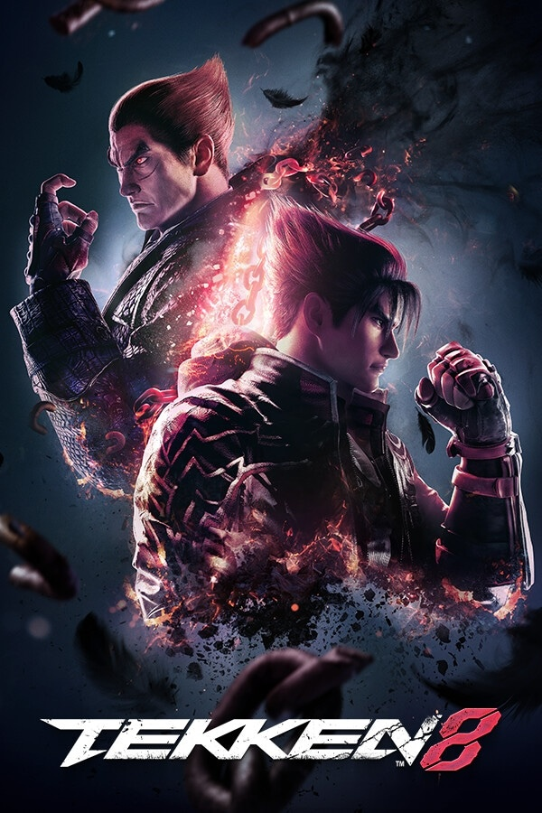

Tekken 8
Tekken 8 é um jogo eletrônico de luta desenvolvido pela Bandai Namco Studios e Arika. Bandai Namco Entertainment publicou o jogo para PlayStation 5, Windows e Xbox Series X/S em 26 de janeiro de 2024. É a oitava entrada principal da série Tekken.



SoundTracks:
My Last Stand
Fallen Destiny